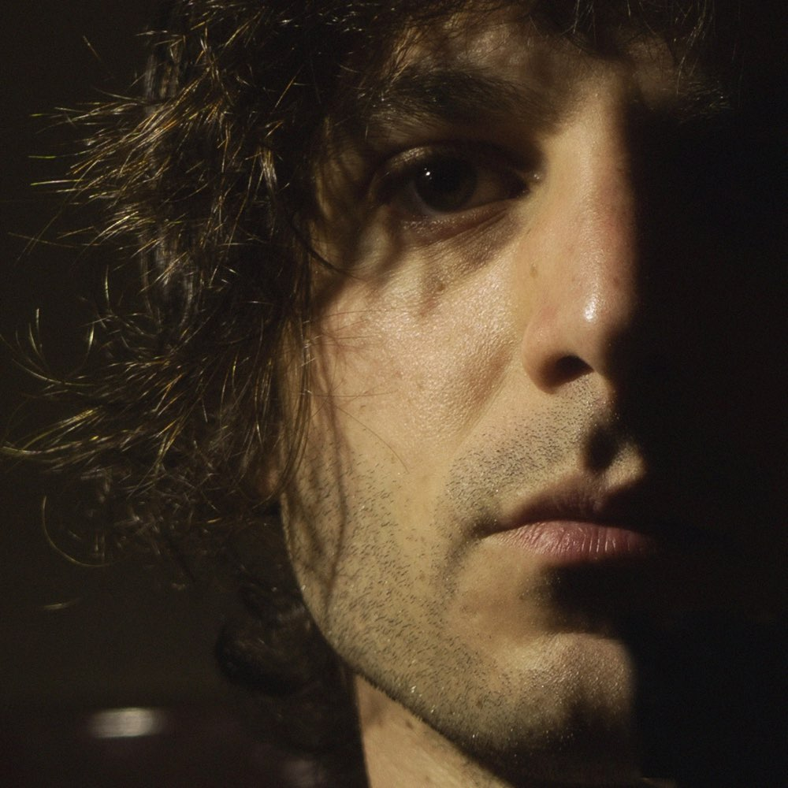
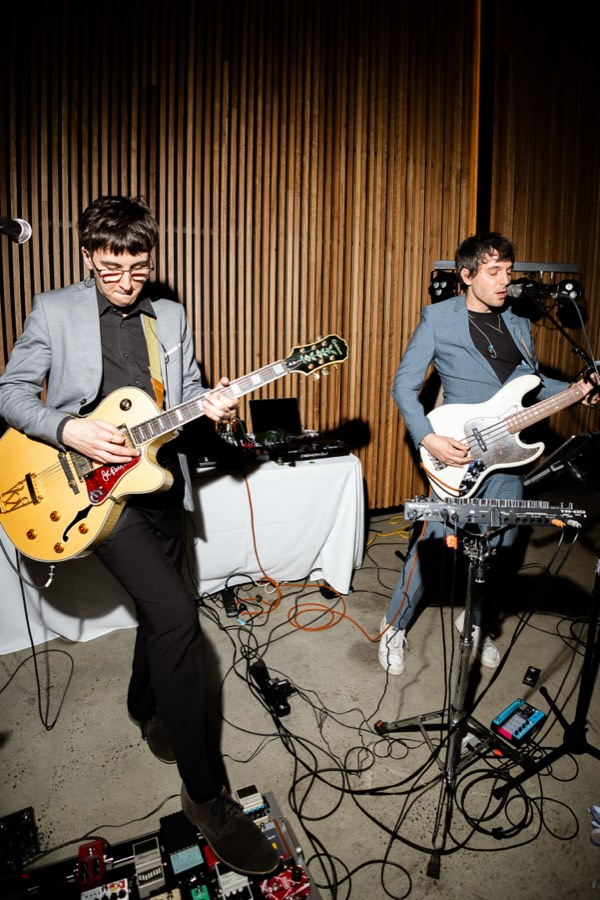

John-PaulJames
Award-winning documentary — screening internationally
Audio Expert in Phenomena
An art and science documentary currently touring film festivals worldwide, and collecting awards as it goes.


What I do
-
Composition & Scoring
Original music for film, television and screen. Score written to picture, to brief, and to deadline.
-
Sound Design & Foley
Built from scratch rather than pulled from a library. Recorded, designed and edited to sit inside the world of the picture.
-
Immersive & Multichannel
Spatial audio for installations and immersive rooms — room mapping, per-speaker routing, and panning designed for the space it plays in.
-
Mix & Master
Self-engineered end to end. Mixed and mastered for the format it will actually be heard in, whether that is stereo, cinema or a 15-speaker room.
Original music
An album is coming
I write and record my own music. It isn’t a service and it isn’t a product — it’s the thing the rest of the work grew out of. An album is on the way.
Follow along while it’s being made.
Live
Lemonade Fuzz
A duo that sounds like a full band. Live looping, drum machine, bass, two vocals, and triggers we control on the night — run by two audio engineers who dial in the room before anyone arrives.

About
I’m a composer and audio expert based in Australia, working across original music, screen scoring, sound design, foley and immersive multichannel audio.
I’ve been writing, playing, producing and engineering music since I was a teenager, and I’ve engineered my own work throughout. That breadth is deliberate — on a project like Metamorphosis it meant one person could carry the score, the foley, the sound design, the mix and the master, and keep a single idea intact all the way through to a 15-speaker room.
Contact
Get in touch for bookings, info or just a chat
Scoring, sound design, immersive installations, or a Lemonade Fuzz booking — all reach me here.